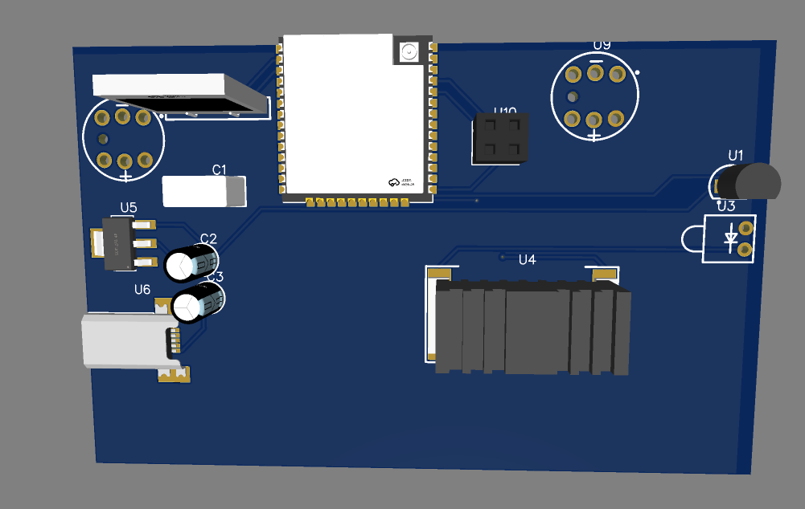
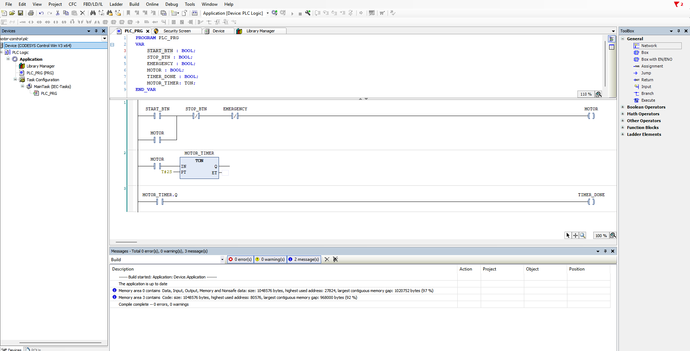

Amin Ahmed G
Building ROS 2 autonomous systems and investigating the communication layer underneath them.
Robotics engineer specializing in ROS 2 autonomous navigation, multi-robot systems, and Nav2 — developing deeper expertise in DDS/RTPS communication architecture and robotics network security.
About Me

Robotics Engineer. ROS 2 Systems. Networked Autonomy.
I am a fourth-year B.E. Robotics & Automation student at Anna University (Expected 2027). I build ROS 2 autonomous mobile robot systems — from Nav2 navigation stacks and AMCL localization to multi-robot coordination and Gazebo Harmonic simulations.
Alongside autonomous systems, I am developing a technical specialization in the communication layer underneath ROS 2 — investigating DDS/RTPS packet flow, building a real-time intrusion detection system for ROS 2 networks in Rust (RoboShield), and working toward a deeper understanding of how robotics software and network security intersect.
Autonomy & Nav2
NavFn Path Planner, DWB Controller, AMCL Particle Filters, Keepout Costmaps.
FSM & TSP Optimisation
7-State Python FSM, Action Clients, Nearest-Neighbour Route Heuristics.
Real-Time Embedded
STM32 ARM Cortex-M, <1ms Loop PID Control, UART/I2C/SPI, FreeRTOS.
B.E. Robotics and Automation
Anna University — Chennai, India (Expected 2027)
Key Coursework: Control Systems, Robot Kinematics, Embedded C, Sensors & Instrumentation, Microprocessors
Technical Skills
Robotics software at the core — with embedded hardware, industrial automation, and a developing focus on networked systems and DDS/RTPS security.
Core Robotics
- ROS 2 (Humble / Jazzy)Intermediate
- Nav2 & Navigation StackIntermediate
- Gazebo (Harmonic, Classic)Intermediate
- SLAM (Cartographer)Intermediate
- AMCL LocalisationIntermediate
- Python (ROS 2 nodes, FSM)Intermediate
- C / C++ (ROS 2 & Embedded)Intermediate
Robotics Systems & Networking
- DDS / RTPS ProtocolFamiliar
- Linux (Ubuntu / Hyprland)Intermediate
- Docker & Git WorkflowIntermediate
- Packet Analysis (libpcap)Familiar
- RustLearning
- Bash ScriptingIntermediate
Embedded & Hardware
- STM32 & ARM Cortex-MIntermediate
- ESP32Intermediate
- PID Control TuningIntermediate
- PCB Design (EasyEDA)Intermediate
- UART, I2C, SPIIntermediate
- Sensors & InstrumentationIntermediate
Industrial Automation
- CODESYS Ladder LogicIntermediate
- PLC ProgrammingIntermediate
- SolidWorks / Fusion 360Intermediate
- STM32CubeIDEIntermediate
- Collaborative Robots (JAKA)Familiar
Work Experience
Hands-on internship experience in autonomous mobile robots, industrial cobots, and UAV hardware.
Karthikesh Robotics (KKR)
Robotics Intern · Chennai, India | Mentors: Karthikesh & SundarCompleted an intensive 20-day robotics training program culminating in the Café Butler Robot — a fully autonomous multi-table delivery robot built from scratch using ROS 2 (Humble / Jazzy) and Gazebo Harmonic. Implemented a custom 7-state Finite State Machine (FSM), Nav2 navigation with AMCL localisation, dual LiDAR sensor fusion, DWB local planner, keepout zone costmaps, nearest-neighbour route optimisation, and a live WebSocket operator dashboard. Built on and extended the simulation environment provided by mentor Sundar sir as a reference base.
Robonetics Automation Solutions LLP
Robotics Intern | Chennai, IndiaGained hands-on experience working with industrial JAKA cobots (collaborative robots) in AGV/AMR deployment. Designed mounting assemblies using SolidWorks and witnessed how autonomous mobile vehicles coordinate workflows inside a live warehouse environment.
Drone Technology Internship
Intern | NSIC Technical Services Centre, ChennaiStudied UAV construction fundamentals. Assembled and disassembled carbon-fiber agricultural drone frames. Performed basic parts modeling using CATIA and reviewed battery chemistry and payload kinematics.
Other Technical & Leadership Experience
Event Organizer
Line Follower Robot Competition | UniversityDrafted the official competition rulebook, designed the path geometries and checkpoint configurations, and oversaw track construction for the university's annual Line Follower Robot race.
Linux Workstation Optimization
Personal Setup · Ubuntu 24.04 / HyprlandCustomized a Ubuntu / Hyprland tiling window manager environment optimized for low RAM overhead at idle to maximize computational resources available to Gazebo simulation workloads.
Projects
Key engineering projects from my academic research and GitHub repositories.
AMR Leader-Follower Robot System
A multi-robot Autonomous Mobile Robot (AMR) formation control system featuring 4-wheel drive kinematics in Gazebo Harmonic, dynamic TF frame tracking, EKF sensor fusion (robot_localization), obstacle avoidance, Nav2 AMCL localization, and an interactive web control dashboard.
The follower kept losing localization on sharp turns — its AMCL particle filter was tuned too tight for the odometry drift it was actually seeing. Retuned the covariance model around real sensor noise instead of simulation defaults.
Café Butler Robot — Autonomous Multi-Table Delivery System
A fully autonomous FSM-driven differential-drive mobile robot that navigates a simulated café environment, collects food orders from the kitchen, and delivers them to multiple customer tables with route optimisation. Features a live WebSocket operator dashboard, Nav2 navigation stack, AMCL localisation, dual LiDAR sensors, keepout zones, and delivery metrics logging. Final project under the mentorship of Karthikesh Robotics.
The robot could hang indefinitely mid-delivery if a kitchen confirmation signal was missed — no timeout was built into that state. Added a timeout-and-retry path before escalating to an error state.

Mecanum Bot Simulator
A 4-wheel kinematic mecanum drive robot simulation running in ROS 2 (Humble / Jazzy) and Gazebo Harmonic. Integrates LiDAR, SLAM (Cartographer), Nav2, and custom gz_ros2_control nodes.
SLAM produced distorted maps because the odometry model didn't account for the sideways drift a holonomic drive introduces. Rebuilt the odometry around a model that reflects mecanum kinematics.
RoboShield: RTPS NIDS & Firewall
Built as an investigation into the communication layer underneath ROS 2. RoboShield is a lightweight, real-time intrusion detection system and inline packet filter for ROS 2 networks. Parses wire-level RTPS submessages (the DDS transport protocol ROS 2 runs on), tracks node publication frequencies, and blocks anomalous traffic using NFQUEUE. Developed in Rust to explore how robotics software and network security intersect at the protocol level.
Packet reads went stale under Docker's bridge networking — an assumption that held on the host network silently broke in a container. Rebuilt capture logic to be network-topology-agnostic.
Two-Wheel Differential Bot
Autonomous differential drive mobile robot simulated in ROS 2 (Humble / Jazzy) and Gazebo Harmonic. Features LiDAR sensor plugins, joint state broad-casters, Gazebo diff-drive controllers, and Python waypoint navigation.
The navigation stack lost position without warning when the drive controller reset odometry without republishing the transform. Added a watchdog that flags stale transforms immediately.
STM32 Line Follower Robot
Physical differential robot powered by an STM32 ARM Cortex-M micro-controller. Features high-speed analog sensor fusion, custom PID motor control, and optimized loop timing running under 1ms for stability at speed.
Sensor cross-talk at higher speeds introduced enough noise to destabilize the control loop. A moving-average filter ahead of the PID calculation — a one-line fix that took real testing at speed to catch.

Temperature Sensor PCB
A custom 2-layer PCB designed in EasyEDA containing an ESP32 microcontroller, AMS1117 linear regulator, LM35 analog temperature sensor, USB filtering power circuitry, and UART serial programming header.
The voltage regulator ran hotter than expected under USB power because the thermal pad was undersized. Now runs a thermal simulation before finalising any board layout.

CODESYS Motor Control PLC
Industrial motor control program written in PLC Ladder Logic using the CODESYS environment. Features start/stop latching with seal-in logic, normally-closed emergency stop override, and custom TON timers.
Structure each rung with a clear comment explaining its safety intent — makes it far easier for another engineer to audit or modify without accidentally removing a critical interlock.

Ubuntu System Monitor (Conky)
A highly customized, lightweight system monitor widget for Ubuntu 24.04/Hyprland environment optimized to display CPU/GPU temperature, core loading, and memory overhead during heavy ROS 2 Gazebo loads.
Control Systems Lab
A live interactive PID tuning simulator and FSM visualizer. Switch tabs to explore both.
PID Gain Tuning
Formulate steering: \(u(t) = K_p e(t) + K_i \int e(t)dt + K_d \frac{de(t)}{dt}\)
Interactive state diagram for the Café Butler robot's 7-state FSM. Click a state or edge to trigger a transition. Click Auto Demo to run a full delivery sequence.
Engineering Activity & Commit Matrix
Consistent hands-on commits across ROS 2 (Humble / Jazzy), Gazebo Harmonic, Nav2 stacks, C++/Python algorithms, and WebSocket control panels.
Get In Touch
Let's collaborate on robotics software, control system designs, or embedded solutions.
Contact Information
Feel free to reach out to me for internship opportunities, research collaborations, or simply to talk about ROS 2!